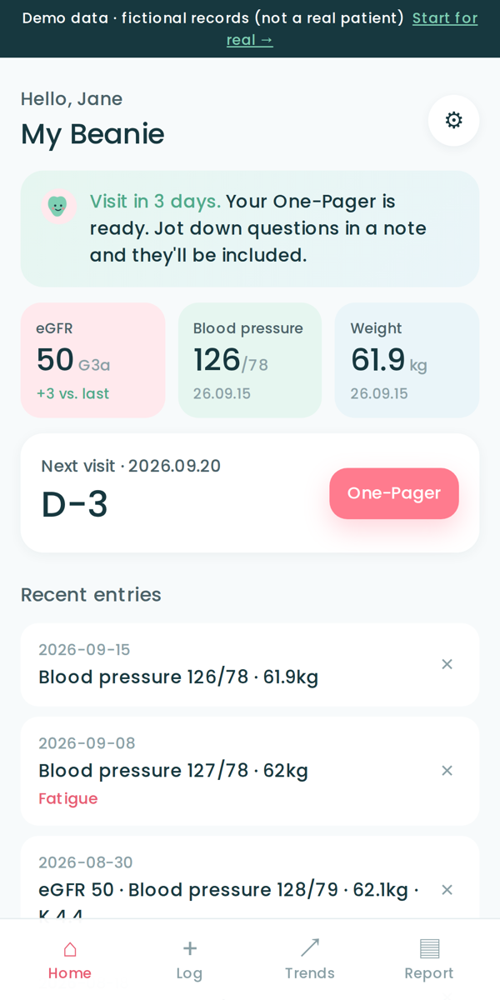

My Beanie rests on two pillars: the patient's own management and caregiver mirroring. The person cooking and the person logging see the same thing — but what to show is the patient's decision. Companionship, not surveillance.
No server, no account. The link the patient sends is the key.
On the app's report screen, they tick what to show — eGFR and labs, blood pressure, weight, body signals, meal patterns, questions for the doctor, whether to show their name — plus the period (30 or 90 days) and scope (latest only or with trend).
"Send mirror card" builds a link containing only the chosen items and hands it to any messenger. Unchecked items are not in the link at all.
Family opens the link in the phone app or on this page. It is read-only; keep it and it stays. A new link refreshes it.
Left: the app the patient uses every day. Right: the mirror card that patient sent with only "eGFR, blood pressure, meal patterns, questions" selected. Fictional demo data.

Weight and body signals are absent because this patient did not tick them — absent from the link, too.
Paste the link a family member sent, or simply tap the link to land here and it opens automatically. A large-screen viewer for those who prefer a computer.
Cards you "keep in this browser" stay on this computer only. You can keep several — one for each family member.
Once a server and accounts exist, the patient turns on "keep sharing with …" and the family view refreshes on its own. The patient still chooses the items, exactly as now, and can switch it off any time. Introduced together with a consent screen.